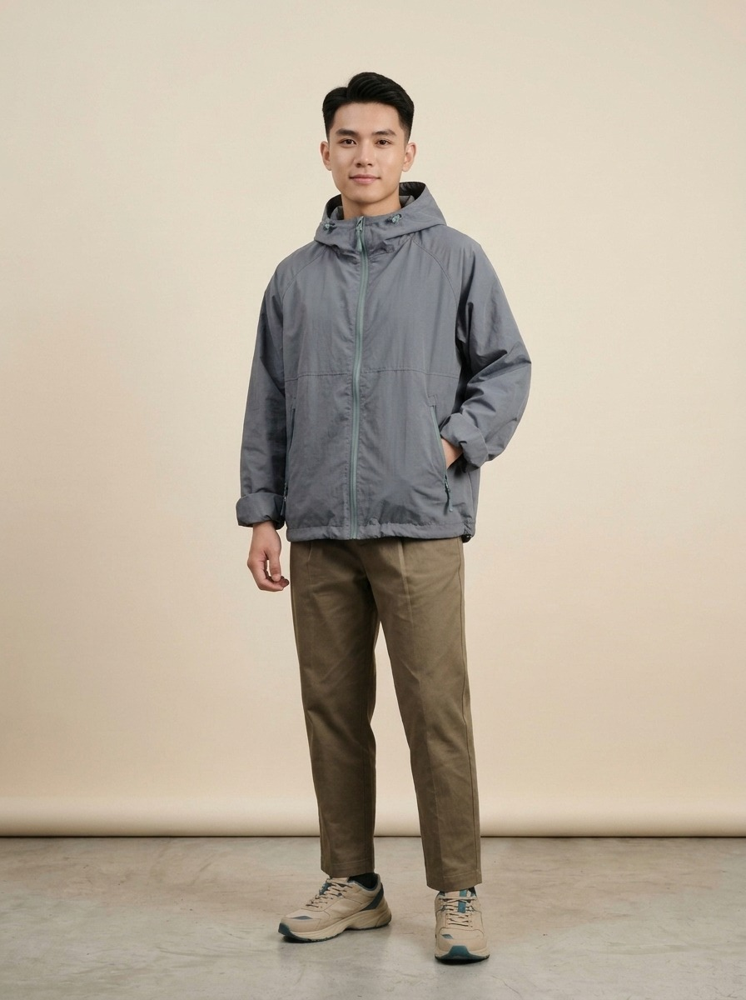
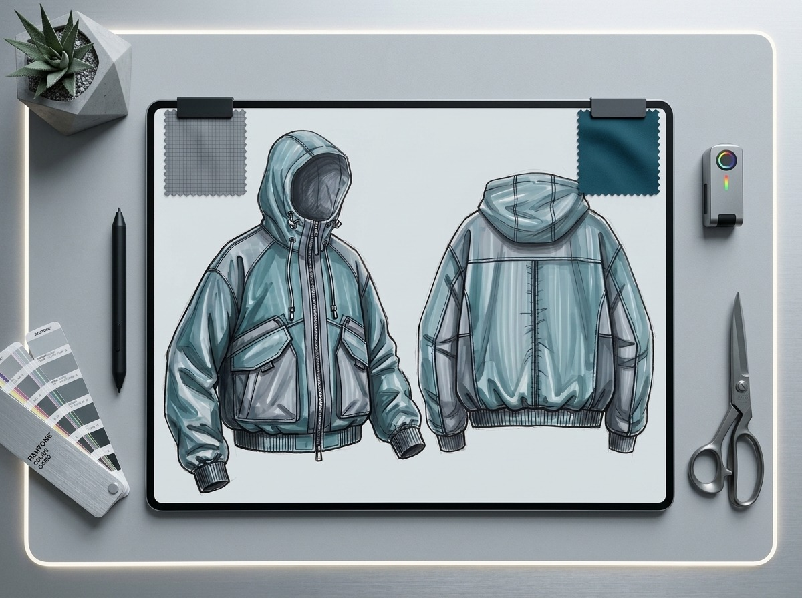

Trang chủ / Bộ sưu tập / Mưa Bụi
Áo khoác dù Mưa Bụi

Đã may mẫu
Bộ sưu tập: Phố Mưa
Giá dự kiến: 450.000đ
Thông tin nhanh
- Chất liệu: vải dù polyester tái chế, lót lưới.
- Màu: xám chì, khóa kéo xanh rêu.
- Dáng: rộng (oversize), có mũ rút dây, hợp cả nam và nữ.
- Size: S, M, L, XL, XXL – xem bảng size Nam & Nữ.
- Gấp gọn được vào túi trước ngực.
Câu chuyện thiết kế
Ý tưởng bắt đầu từ một buổi chiều tháng Sáu, khi Minh Anh đi học về thì trời đổ mưa. Áo mưa thì để ở nhà, còn áo khoác nỉ thì ướt sũng. Bạn ấy tự hỏi: "Sao không có một chiếc áo vừa mặc đi học được, vừa đỡ được cơn mưa nhỏ?"
Nhóm đã thử ba phương án:
- Lần 1: vải dù dày – chống mưa tốt nhưng quá nóng khi trời nắng lại.
- Lần 2: vải dù mỏng không lót – mát nhưng dính vào người khi đổ mồ hôi.
- Lần 3: vải dù mỏng có lót lưới – vừa mát vừa không dính, nhóm chọn phương án này.
Cái tên "Mưa Bụi" lấy từ những cơn mưa nhỏ lất phất – đúng loại mưa mà chiếc áo này được làm ra để chống lại.
Từ bản vẽ đến sản phẩm
